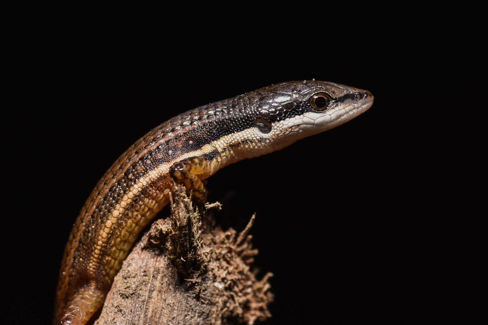

Hello! My name is Daniel. I am a Colombian biologist interested in large-scale ecological and evolutionary processes. My research focuses on understanding the eco-evolutionary drivers that shape patterns of species diversity. I am also actively involved in the taxonomy and systematics of Neotropical reptiles, with a particular focus on snakes and gymnophthalmid lizards.
I love scientific outreach and believe in the power of open data to reduce barriers to scientific knowledge. I am also an enthusiastic programmer with a passion for automating workflows.
MSc. in Ecology & Evolutionary Biology (incidental)
Princeton University, United States
2024 – 2026
MSc. in Biological Sciences
National Autonomous University of Mexico, Mexico
2021 – 2023
BSc. in Biology
University of Antioquia, Colombia
2012 – 2018
Where I've Worked
Follow my academic path
Simões Lab
Dept. of Ecology & Evolutionary Biology · Princeton University
2024 – Present
Museo de Zoología "Alfonso L. Herrera"
Laboratorio de Herpetología · National Autonomous University of Mexico
2021 – 2023
Museo de Herpetología Universidad de Antioquia
Grupo Herpetológico de Antioquia · University of Antioquia
2016 – 2018
Serpentario Universidad de Antioquia
Grupo de Ofidismo & Escorpionismo · University of Antioquia
2013 – 2016
Research
Why we see what we see, and why we see it where we see it?
Research
Publications
32 publications
Open access
Pay-wall
Research Articles 20
Taxonomy, morphology and distribution of snail-eating snakes (Dipsadidae: Dipsas) from Colombia.
García-Cobos, D., Salazar-Guzman, A. M., Herrera-Alzate, J. F., Castaño-Bernal, N., Castillo-Ramírez, M., Venegas-Valencia, K., Galeano, S. P. & Vásquez-Restrepo, J. D.
2026. Journal of Natural History, 60(13–16):719–746.
A new species of hedgehog-lizard of the genus Echinosaura (Squamata: Gymnophthalmidae) from Colombia and Panama with a reevaluation of the conservation status of the genus.
Alice in Lizardland: exploring the spatio-temporal speciation and morphological evolutionary rates in the highly-diverse microteiid lizards (Squamata: Gymnophthalmidae).
Vásquez-Restrepo, J. D. & Diago-Toro, M. F.
2024. Biological Journal of the Linnean Society, 142(2): 208–219.
Fantastic lizards and where to find them: cis-Andean microteiids (Squamata: Alopoglossidae & Gymnophthalmidae) from the Colombian Orinoquia and Amazonia.
Diago-Toro, M. F., García-Cobos, D., Brigante-Luna, G. D. & Vásquez-Restrepo, J. D.
Description of the striking ontogenetic colour variation of Anadia antioquensis (Squamata: Gymnophthalmidae), with new data on its morphology, distribution, and microhabitat use.
Filling the gaps in a highly diverse Neotropical lizard lineage: a new and endemic genus of Cercosaurinae (Squamata: Gymnophthalmidae) with the description of two new species from the Northern Andes of Colombia.
Fang, J., Vásquez-Restrepo, J. D. & Daza, J. M.
2020. Systematics and Biodiversity, 18(5): 417–433.
Phylogeny, taxonomy and distribution of the Neotropical lizard genus Echinosaura (Squamata, Gymnophthalmidae), with the description of two new genera in Cercosaurinae.
Vásquez-Restrepo, J. D., Ibáñez, R., Sánchez-Pacheco, S. & Daza, J. M.
2020. Zoological Journal of the Linnean Society, 189: 287–314.
Exploring the eco-evolutionary drivers underlying patterns of species diversity
Teaching
Teaching Experience
Conservation Biology
Department of Ecology and Evolutionary Biology Princeton University
Fall 2025UndergraduatePartial dedication
Vertebrate Comparative Anatomy and Physiology
Department of Ecology and Evolutionary Biology Princeton University
Spring 2025UndergraduatePartial dedication
Tools for Assessing the Impacts of Climate Change on Natural and Human Systems
Institute of Atmospheric Sciences and Climate Change National Autonomous University of Mexico
Fall 2022Undergrad & Graduate (mixed)Partial dedication
What My Students Say
Anonymous feedback from course evaluations
He was seriously awesome. You can just tell he loves teaching and puts himself in the shoes of the students to carefully choose his words to keep us engaged. Really loved Daniel! Precepts were amazing!
Conservation Biology
Daniel is incredibly knowledgeable and helped clarify many of the questions we had during lab about unusual structures.
Vertebrate Comparative Anatomy
Daniel was great, made the precept approachable and interesting. Really took us beyond the material and helped us see the real world applications. Made it a point to teach us to question things and form our own opinions.
Conservation Biology
Daniel, Amy, Katherine, and Mary were an integral part of this course and lab portion. They helped us so much during lab and explained the material we learned from lecture in such an easy way. They made the labs a 10/10 experience.
Vertebrate Comparative Anatomy
Daniel acted as a great mediator between the professor and students. He contributed great insight with his own experience and knowledge, but also was approachable and responsive.
Conservation Biology
Daniel is amazing! He puts in so much effort into his part of the course, both through engaging precepts and very extensive feedback on precept assignments. Great guy!
Conservation Biology
Daniel was extremely knowledgeable and patient. The precepts were great.
Conservation Biology
He is very engaging and wants us to understand the concepts as much as possible. Offers guidance any time you ask for it.
Conservation Biology
Very good quality, very supportive and well taught.
Conservation Biology
Daniel is an excellent preceptor who really cares that I learned and engaged with the materials. He always provided extensive comments to everyone's response to precept questions.
Conservation Biology
Resources
Programming tutorials for ecology and biodiversity
Resources
Tutorials
Introduction to R
In this tutorial we cover some basics of R programming: creating variables in different dimensions, variable types, loading external data, indexing, iterative loops and conditionals, and some functions that will be very useful.
A short semi-guided course on biological diversity analysis, covering the theoretical and practical foundations behind diversity analyses: indices, estimators, accumulation and rarefaction curves, true diversities, and diversity profiles.
A short tutorial applying the methodology of Vásquez-Restrepo & Daza (2025) for extinction risk assessment under IUCN criterion B, using forest cover change as a proxy for habitat quality reduction.
Amphibians and reptiles are animals that evoke curiosity, fear, and fascination. Their shapes, colors, and lifestyles have fueled the imagination of hundreds of cultures and civilizations over time, making them excellent models. As a biologist, I believe one of the best ways to spark people's curiosity about the natural world is through photography, especially when it comes to such little-known and feared creatures.
I consider myself an amateur photographer, gradually improving my technique through self-teaching and with the help of those who have made photography their way of life.
Below are links to two sites where I regularly upload some of my work, Flickr and the CalPhotos platform of the University of Berkeley. All my photographs are under a Creative Commons CC BY-NC-SA 4.0 license, which means they can be used as long as their authorship is respected, they are not modified in content, and they are not used for commercial purposes. I use this license to give people a bit more freedom, as I believe information is truly useful when it is accessible to those who need it.
If any of my photographs are useful for illustrating an educational or scientific product, or if you need to use them beyond the standard license, you can contact me directly through any of the means listed in the About Me section.

Photo 1
Cercosaura argulus · San Rafael, Antioquia, Colombia
In terms of copyright, there are two concepts that are essential to understand: moral rights and economic rights. Generally speaking, moral rights refer to the right of attribution of a work—in other words, the rights related to its authorship. These rights always belong to the author, as they are inalienable and non-renounceable. On the other hand, economic rights are those that the author can authorize or transfer to a third party to reproduce, adapt, modify, distribute, or commercialize a work.